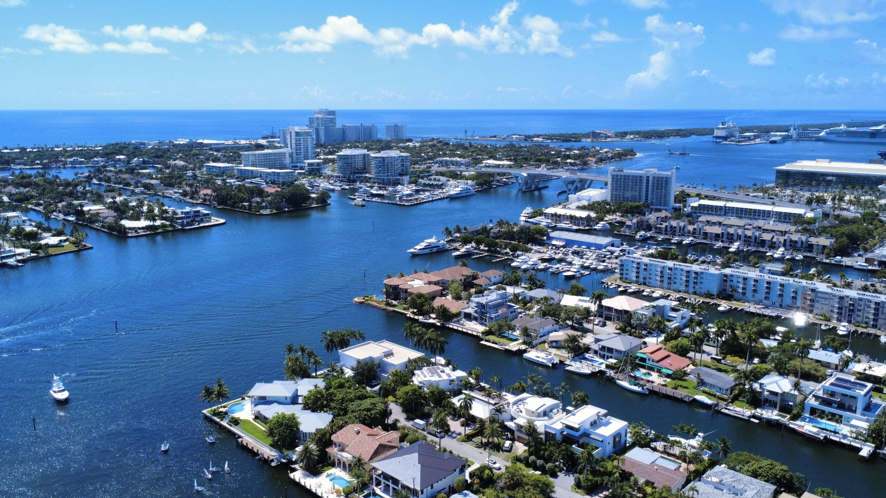
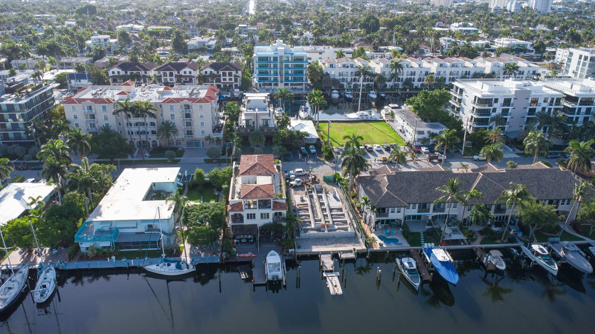
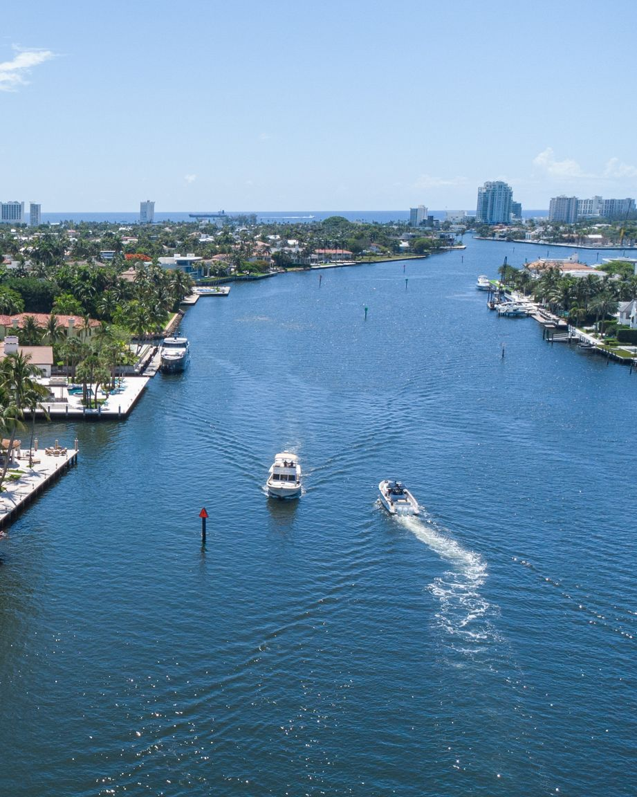
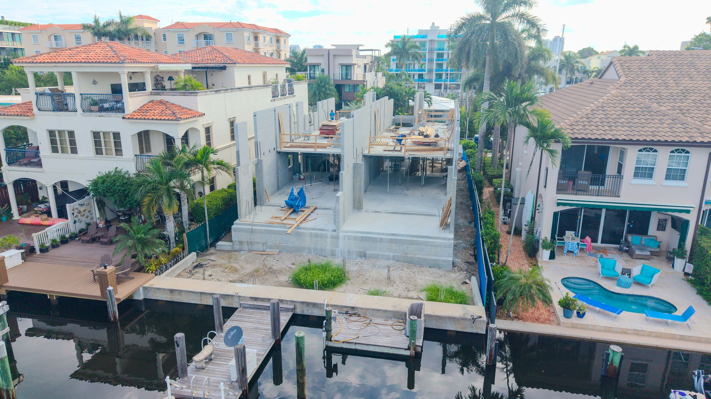
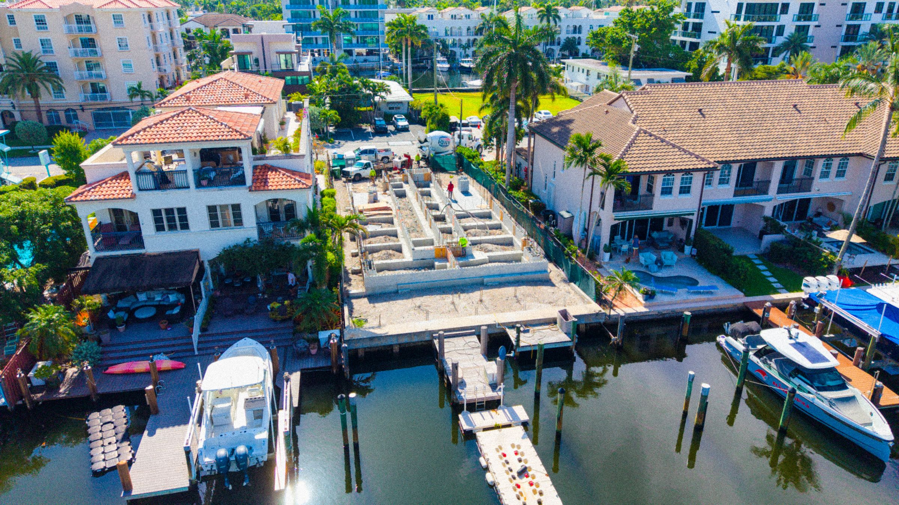

Buying on the Water
What to look for, why it matters and what to ask before you buy waterfront in Fort Lauderdale.
Why Waterfront Matters
In Fort Lauderdale, the water works like a road. The city has about 165 miles of waterways (Visit Lauderdale), and almost no new waterfront can be created. That’s why waterfront homes cost more.
But not all waterfront is equal. Two homes on the same canal can sell for very different prices. What matters is how easily your boat gets to the ocean: how deep the water is, how wide the canal is, and whether a bridge is in the way.
The paperwork matters too. A failing seawall, an unpermitted dock, or a lot that doesn’t legally reach the water (§ 253.141, Fla. Stat.) can cost more than the view is worth. I look at every waterfront home as a Realtor and as a lawyer.

Depth at Low Tide
What matters is how much water is under your boat, at your dock, at low tide. If there isn’t enough, your boat sits on the bottom every day.
The tide here rises and falls about 2½ feet, twice a day (NOAA, Port Everglades). A dock that looks deep at a high-tide showing can be much shallower a few hours later.
Before you buy:
- Measure the depth at the dock at low tide.
- Check right next to the seawall, where rocks and silt build up.
- Check the shallowest spot on the way out to the main channel.
- Make sure your boat fits, with room to spare.

Canal Width & Distance
Canal width limits your boat. In Fort Lauderdale, a docked boat can’t stick out more than 30% of the canal’s width (City Code § 8-91(e)). On a 60-foot canal, that’s 18 feet.
Distance to the ocean is really about time. Unless a different limit is posted, every waterway except the Intracoastal is idle speed, no wake (City Code § 8-166(a)(4)). Drawbridges make you wait. A low fixed bridge is worse: it permanently limits how tall your boat can be. That’s why “no fixed bridges” adds so much value.
Bridges on the main routes:
- 17th Street Causeway (drawbridge): 55 ft when closed (Coast Guard)
- New River FEC railroad bridge (drawbridge): 4 ft when closed (Federal Register)

Setbacks
City rules often decide how big a boat your lot can hold:
- Your dock can stick out no more than 25 feet, or 25% of the canal’s width, whichever is less (ULDR § 47-19.3(c)).
- Your boat has to fit between your side setback lines, extended into the water (ULDR § 47-19.3(h)).
- Your boat can’t stick out more than 30% of the canal’s width (City Code § 8-91(e)).
- One boat lift for the first 100 feet of lot width. A second needs city approval (ULDR § 47-19.3(b)).
- You need a house on the lot to build a dock, and a city permit before you start (ULDR § 47-19.3(c); City Code § 8-91(b)).
Examples: In RS-8 zoning, a waterfront lot must be at least 75 feet wide, and side setbacks start at 5 feet. That leaves about 65 feet for your boat. In RS-4.4, a waterfront lot must be at least 100 feet wide, with 10-foot side setbacks, which leaves about 80 feet (ULDR §§ 47-5.30, 47-5.31). Setbacks grow for taller houses and some subdivisions have special rules, so check the specific lot.
Local exception: owners on Isle of Venice and Hendricks Isle may dock boats past their side setback lines (ULDR § 47-19.3(i)).
You can ask the City Commission to let a dock reach farther, but only for extraordinary circumstances, after a public hearing with notice to neighbors within 300 feet. Even then, nothing can extend past 30% of the canal’s width (ULDR § 47-19.3(e); City Code § 8-35).

Seawall Inspections
Every waterfront owner must keep their seawall in good repair. If tidal water flows through it onto a neighbor’s property or the street, it’s presumed broken. The city can cite you, and you then have 60 days to show progress and 365 days to finish the repair (ULDR § 47-19.13(D)(2)-(3)).
A new seawall, or one with major repairs, must be built to 5 feet NAVD88. Until 2035, 4 feet is allowed if the wall can be raised to 5 feet by 2050 (ULDR § 47-19.13(D)(1)). “Major” means work on more than half the wall’s length, or work costing more than half the wall’s replacement value (ULDR § 47-19.13(C)(12)). Once you cross that line, the entire wall must meet the new standard (ULDR § 47-19.13(D)(7)).
Have a marine contractor check for:
- Cracks or broken concrete
- Rusty, exposed steel
- Leaning
- Holes or sinking ground behind the wall
- Water seeping through at low tide
Sellers have to disclose this. Every Fort Lauderdale sale contract for property in a tidally influenced area must include a bold, capitalized seawall disclosure (ULDR § 47-19.13(E)). Florida law also requires a separate flood disclosure (§ 689.302, Fla. Stat.). Ask for both, plus the seawall permits.
Questions to Ask
I ask these on every waterfront showing. Most can’t be answered by looking at the house. They’re answered by the survey, the permits and the chart, so I get them before an offer, not after.
- Boat specs in writing. Length, beam, draft and air draft. Every other answer depends on these four numbers.
- Route map with every bridge. Each bridge from the dock to the inlet, whether it opens, and its closed clearance.
- Depth soundings at low water. At the slip, at the seawall and at the shallowest point on the way out.
- Survey with seawall cap height. Does the lot legally reach the water (§ 253.141, Fla. Stat.), and how high is the wall?
- Marine contractor inspection. Seawall, dock and lift condition, before the inspection period ends.
- Seawall, dock and lift permits. Unpermitted work becomes the buyer’s problem (City Code § 8-91(b)).
- Elevation certificate and flood zone. Plus the seller’s flood disclosure (§ 689.302, Fla. Stat.) and the city’s seawall disclosure in the contract (ULDR § 47-19.13(E)).
- Wind and flood insurance quotes. Get them before you commit; they can change the math.
- Plans for the dock. Renting it out is prohibited in RS-8 and RS-4.4 zones (City Code § 8-91(g)).
Sources
- § 253.141, Fla. Stat., riparian rights
- § 689.302, Fla. Stat., flood disclosure
- Fort Lauderdale Code of Ordinances, ch. 8, Boats, Docks, Beaches and Waterways (§§ 8-35, 8-91, 8-166)
- Fort Lauderdale ULDR § 47-19.3 (docks and lifts), § 47-19.13 (seawalls), §§ 47-5.30–47-5.31 (setbacks)
- City of Fort Lauderdale tidal barrier ordinance FAQ (2023)
- Broward County Code, ch. 39, art. XXV, seawalls
- Broward County resilience standard for seawalls
- NOAA tidal datums, Port Everglades station 8722956
- 33 CFR Part 117, drawbridge operations
- Coast Guard rule, SE 17th Street Bridge (2026)
- New River FEC railroad bridge, 84 FR 56701 (2019)
- New River drawbridge rule, Oct. 25, 2021
- Visit Lauderdale, waterway miles
- USCG Local Notice to Mariners
- FEMA Flood Map Service Center
This guide is general information, not legal advice. Every property needs its own survey, inspection and review, and codes and bridge operations change. Figures reviewed .